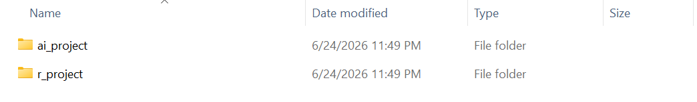
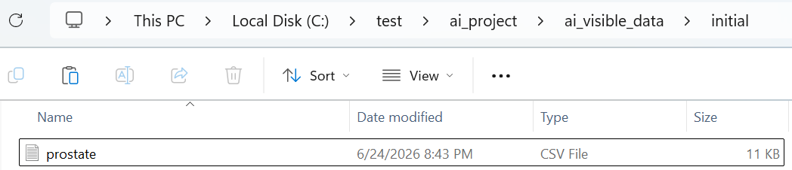

This article shows one way to use airsetup before
starting an AI-assisted R analysis.
The example uses a prostate cancer trial dataset as a stand-in for a real analysis workflow. The dataset itself is not the main point. The main point is the project structure: AI-visible data and hidden analysis data are placed in different folders, scripts are generated into a controlled output area, and QC evidence has a stable place to live.
In this article, you will:
- create a split
airsetupproject; - place visible and hidden data in matching folder structures;
- use
AGENTS.mdandQC_STATUS.mdto keep AI-assisted work bounded and reviewable.
Create a split project
Start by creating a project in split mode.
This creates two sibling folders:
example-analysis/
+-- ai_project/
+-- r_project/
ai_project/ is the workspace AI agents may inspect.
r_project/ is the local R execution workspace for hidden
analysis data.
This is not a hard access-control system. It is a project structure and a set of working rules that make the boundary explicit.
Use the AI-visible workspace
ai_project/ contains the materials that support
AI-assisted work.

The main folders are:
-
source/, for analysis instructions and source materials; -
ai_visible_data/, for dummy or visible data AI may inspect; -
ai_output/, for scripts and helper files generated by AI; -
r_output/, for outputs created when the user runs R scripts; -
qc/, for QC evidence and review materials; -
log/, for notes and decision records.
The generated AGENTS.md describes the project rules. The
generated QC_STATUS.md gives QC status and open review
items a stable entry point.
Keep hidden analysis data outside AI inspection
In split mode, r_project/ is created next to
ai_project/.

This folder is intended for local R execution and hidden analysis
data. AI agents should not inspect
r_project/ai_hidden_data/ directly.
The visible and hidden data areas can share the same internal structure:
ai_project/ai_visible_data/initial/
r_project/ai_hidden_data/initial/Put visible and hidden data in matching paths
For this example, place a small visible prostate.csv
under:
ai_project/ai_visible_data/initial/prostate.csv
Then place the full analysis dataset with the same file name under:
r_project/ai_hidden_data/initial/prostate.csv
Using the same file name lets AI agents design scripts against visible data and lets R run those scripts against hidden data by changing only the input root.
For the prostate example, the visible data can be a small CSV with the same columns as the full dataset. The source notes describe variables such as:
-
patno, patient number; -
rx, treatment assignment; -
dtime, follow-up time; -
status, event status; -
age, age at baseline; -
hg, hemoglobin level; -
bm, bone metastases indicator.
The exact statistical analysis is intentionally outside
airsetup. The package only prepares the workflow
boundary.
Add analysis instructions
Place analysis instructions under:
ai_project/source/initial/Those instructions should say what to create, where to write outputs, and what data boundaries must be respected.
A typical request to Codex might be:
Follow the analysis instructions in
source/initial/. Create R scripts underai_output/. Use onlyai_visible_data/initial/to inspect column names and file structure. Do not list, open, copy, summarize, or otherwise inspect../r_project/ai_hidden_data/.
This request matches the generated AGENTS.md: AI agents
may use visible data to design scripts, but hidden data stays outside
direct AI inspection.
Run scripts and record QC
The user runs R scripts locally. Scripts may write outputs to:
ai_project/r_output/QC materials can be written to:
ai_project/qc/airsetup does not force one QC method. A project might
use double programming, output review, row-count checks, discrepancy
tables, or another context-specific check.
For example, a double-programming QC workflow could:
- create
timeandeventvariables with Algorithm A; - create the same variables with Algorithm B;
- compare both implementations;
- save the comparison table under
qc/; - record the status as
QC-001inQC_STATUS.md.
QC_STATUS.md is not a declaration that QC is complete.
It is a running status file: what has been checked, where the evidence
is, and what still needs human review.
Check the required structure
Use aircheck() to verify that the required folders and
files exist.
aircheck("example-analysis", mode = "split")aircheck() returns a data frame with one row per
required item. It reports whether each folder or file was found.
This makes it easy to confirm that the workspace still has the structure that AI-assisted analysis depends on.